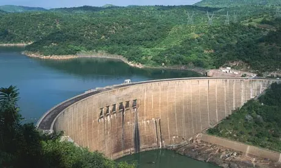
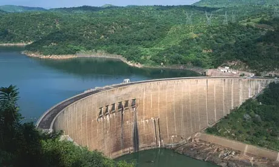

Water power is still widely used across the world. Being reliable and renewable, some countries use water power as their substitute for climate agreements.
Hover me to see the text!
Worldwide, hydroelectricity makes up one fifth of the world's power and 7% of the United States'. Dams originally were built to control floods and to tame the rivers, however, dams were soon erected for power more and more as demand increased.
Reservoirs are built nearby to control the waterflow to produce more electricity. Nowadays, the amount of water power produced is slowly being lowered as other alternatives are being found as the cost of water power is very high.
Other methods of producing water power include tidal power, which harnesses the moon's tidal force to produce energy, and wave power, which involves placing an air-filled device to capture the sea's energy. Although less common, you will still see water wheels in old fashioned places and displays.
Overall, water power is still used in a variety of ways today.
 
